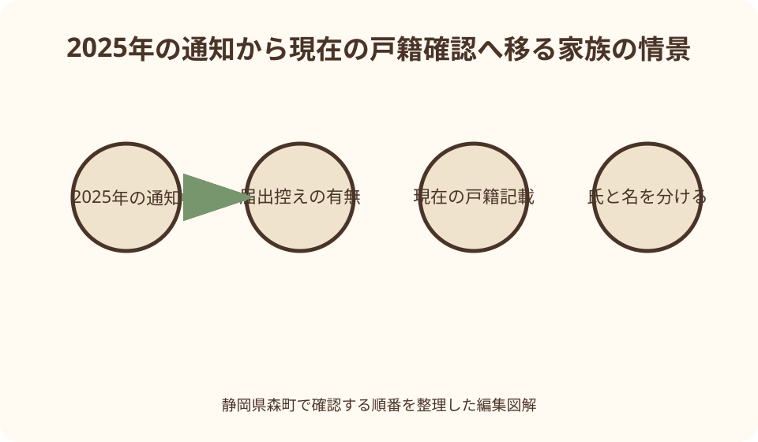
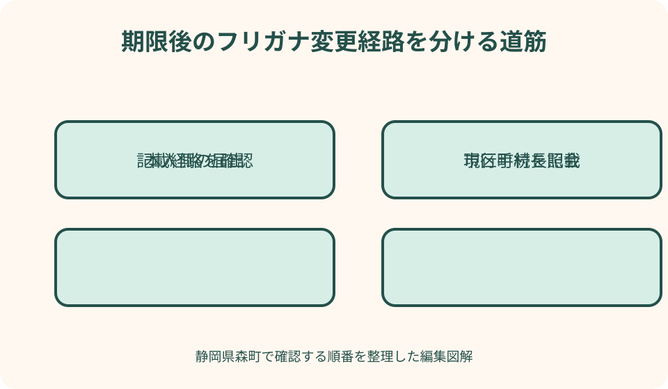

行政手続・証明書｜最終確認 2026-08-10
静岡県森町の戸籍フリガナを確認する｜通知・期限後の変更・氏と名の違い
戸籍のフリガナ制度は、通知を見て全員が同じ届書を出す仕組みではありません。初回の届出期間が終わった現在は、通知が正しかったか、当時自分で届け出たか、市区町村長が通知どおり記載したかによって次の確認が変わります。

編集イラスト2026年現在の結論を先に整理する
この記事の確認日は2026年8月10日です。戸籍へ氏名のフリガナを記載する制度は2025年5月26日に始まり、法務省が案内した初回の届出期間は2026年5月25日で終了しました。森町が2025年に発送した通知を今見つけても、当時と同じ期間内手続がそのままできるとは考えないことが出発点です。
いま通知の読みが自分の認識と一致していた人は、当時届出をしていなくても、それだけで手続漏れとは限りません。森町と法務省は、通知が正しければ届出不要で、期間後に通知どおり戸籍へ記載される流れを示していました。必要なのは、古い通知を慌てて提出することではなく、現在の戸籍上の記載を必要に応じて確かめることです。
反対に、通知と普段の読みが違う、あるいは戸籍へ記載された後に違いへ気付いた場合は、誰がどの経路で記載したかを確認します。期間内に本人側から届け出たフリガナと、届出がなく市区町村長が通知どおり記載したフリガナでは、後の変更に関する扱いが同じではありません。
確認項目は四つです。対象者の本籍地、氏と名のどちらに違いがあるか、期間内の届出の有無、市区町村長による記載かどうかを書き出します。この四点を住民生活課住民係へ伝えれば、『初回届出の説明』と『記載後の変更』を取り違えにくくなります。
2025年施行から現在までの流れ
改正戸籍法の施行前、氏名の読み方は住民基本台帳事務などで使われていても、戸籍の記載事項として公証されていませんでした。2025年5月26日の施行後、戸籍に氏のフリガナと名のフリガナを記載する仕組みが始まりました。これは従来の漢字氏名を置き換えるのではなく、読みを戸籍上の情報として加える制度です。
制度開始時には、本籍地の市区町村長が、住民票上の住所宛てに『戸籍に記載される予定のフリガナ』を通知しました。森町公式では、森町に本籍のある人への通知を2025年7月下旬ごろから発送すると当時案内していました。現住所の市区町村ではなく、本籍地が通知主体だった点が重要です。
通知を受けた人は、記載予定の氏と名を読み分け、誤りがあれば期間内に届出をする仕組みでした。通知が正しければ届出をしなくてもよく、期間経過後、市区町村長が通知のフリガナを戸籍へ記載する流れでした。届出をしなかったこと自体への手数料や罰則はないとも案内されています。
現在は初回期間を過ぎています。法務省の過去のオンライン届出案内には、マイナポータルでの新規届出受付が2026年5月25日に終了した旨が掲載されています。検索で古い『オンライン・窓口・郵送の三方法』を見ても、現在の訂正や変更へそのまま当てはめず、現行の受付方法を窓口で確かめてください。
通知は何を知らせる書類だったのか
圧着はがきなどの通知は、既に戸籍へ確定記載された証明書ではなく、これから記載する予定のフリガナを本人側が確認するための書類でした。森町の広報では、同じ戸籍かつ同じ住所の場合、一通に最大四人まで記載される案内でした。家族全員が必ず別々の封書を受け取る前提ではありません。
確認すべき中心は、漢字表記ではなく、その横に示された氏のフリガナと各人の名のフリガナです。世帯で呼び方が似ていても、長音の有無、濁音、促音などで普段の表記と違うことがあります。通称やニックネームと比べるのではなく、年金、旅券、銀行などで正式に使っている読みも並べて確認する必要がありました。
通知が届かなかった理由を『自分は対象外だった』と即断するのは危険です。施行時の本籍、住民票住所、海外居住、郵便事情など複数の要因があり得ます。現在になって通知の有無が分からない場合は、家族の記憶だけで届出済みと扱わず、本籍地と現在の戸籍記載を窓口へ尋ねます。
古い通知は、いつどの読みが予定されていたかを示す経過資料として保管価値があります。ただし現在の記載を直接証明する用途へ流用しないでください。証明提出が必要な相手には、どの戸籍証明が必要か、フリガナがどう表示されるかを先方と森町の双方へ確認します。
届出が不要だったケースを正しく理解する
届出不要だった典型は、2025年以降に届いた通知の氏と名が、自分の認識するフリガナと一致していたケースです。その場合は何もしなくても、初回期間後に通知どおり戸籍へ記載される仕組みでした。『届出書を出していないから空欄のまま』と決めつける必要はありません。
もう一つ注意したいのは、制度開始前の出生届などで読み方を書いた記憶があるケースです。法務省は、従来届けた読み方が通知内容と一致していれば、基本的に新たな届出は不要と説明していました。ただし従来情報は戸籍のフリガナそのものではなかったため、通知の確認は別に必要でした。
制度開始後に出生や帰化などで初めて戸籍へ記載された人は、初回通知の一斉手続とは別の流れです。出生届など、その人が戸籍へ入る届出と合わせてフリガナを届けるため、『2025年の通知が来ていない』という家族の事例をそのまま比較できません。対象者が戸籍へ記載された時期を先に見ます。
届出不要は『フリガナを確認しなくてよい』という意味ではありません。通知どおり市区町村長が記載した後、保有する本人確認書類や金融・年金関係の読みと差があれば、別手続へ影響する可能性があります。いま必要なのは、現在の戸籍記載と普段使う正式な読みを照合することです。

初回の届出期限が終わった後の確認順
2026年5月25日は、制度開始時の一斉確認に伴う初回届出期間の終期でした。この記事の確認日時点では既に過ぎています。期限前のリーフレットを見つけても、『まだ一年以内だから届けられる』とは読まず、現在は戸籍へ記載された後の段階だと認識してください。
最初に、期間内にマイナポータル、窓口、郵送のいずれかで自分や家族が届出をしたかを確認します。受付控え、マイナポータルの申請履歴、郵送した届書の写し、家族のメモを探します。記憶が曖昧なら、窓口へ『届出の有無を確認できるか』から質問し、推測で記載経路を決めません。
届出をしなかった結果、市区町村長が通知どおり記載したフリガナは、一度に限り家庭裁判所の許可を得ず変更できる仕組みが案内されています。一方、期間内に自分で届け出た後の変更は、原則として家庭裁判所の許可が関わります。自分がどちらなのかを確定しないまま変更届を準備しないことが大切です。
市区町村長による記載後の一回の変更を既に使ったか、届出後に事情が変わったかなど、個別経過によって必要な確認は増えます。森町へは『通知が違った』だけでなく、対象者、氏か名か、初回届出の有無、変更歴を伝え、現在使うべき様式と必要資料を案内してもらいます。
氏のフリガナと名のフリガナを分ける
氏のフリガナは、同じ戸籍の構成員に共通する氏の読みを扱います。制度開始時の氏の届出人は、原則として戸籍の筆頭者でした。筆頭者が除籍されている場合などは順位が変わるため、『家族の中で窓口へ行きやすい人』が自由に届出人になるわけではありません。
名のフリガナは、一人ひとりの名の読みです。原則として本人が届け出、年齢や法定代理関係によって親権者などが関わります。同じ通知に家族四人が載っていても、氏を扱う届出と四人それぞれの名を扱う届出は、届出人の考え方が異なります。
未成年者についても一律ではありません。法務省の案内では、十五歳未満は法定代理人、十五歳以上十八歳未満は本人も法定代理人も届出できるという年齢区分が示されていました。現在の変更場面で誰が手続するかは、対象者の年齢と記載経路を伝えて確認します。
夫婦や親子で一か所だけ読みが違うときは、まず氏の問題か、特定の人の名の問題かを赤字で分けます。氏の届出を名の訂正に使ったり、子の名の違いを筆頭者だけの問題として相談したりすると、窓口で説明が長くなります。通知や戸籍を見ながら対象欄を特定してください。
普段の読みと戸籍のフリガナが違うとき
銀行口座では『オオイシ』、旅券のローマ字は別の長音表記、家族は『オーイシ』と認識している、といったように、日常では同じ名前でも表記方法が揺れることがあります。まず戸籍に記載したいフリガナを片仮名で一つにし、各機関の表記規則による違いと、読みそのものの違いを分けます。
一般に認められている読み方であることが制度上の基準です。漢字の音訓や字義との関連が通常は認めにくい読みを届ける場面では、その読みを社会生活で使ってきたことを示す資料を求められる場合があります。旅券、預金通帳、資格証など、継続使用が分かる資料の候補を窓口へ先に伝えてください。
資料は多ければ必ず通るというものではありません。誰の資料か、いつから使っているか、氏と名のどちらを示すかが判別できるよう並べます。原本が必要か写しでよいか、現在の変更経路にどの資料が合うかは、持参前に森町へ確認します。
戸籍のフリガナを変えれば、年金、銀行、保険、旅券、勤務先の全情報が自動で同じになるとは限りません。変更後に連絡する先を一覧にし、各機関が求める証明、表記形式、期限を個別に確認します。特に海外で使うローマ字表記は、戸籍の片仮名と同一の仕組みではありません。
森町へ相談する前にそろえる情報
森町の住民生活課住民係へ相談する前に、本籍の表示、筆頭者、対象者の氏名と生年月日、現住所、通知の有無を一枚へ書きます。本籍と住所を混ぜないことが肝心です。森町に住んでいても本籍が町外なら、記載主体は別の市区町村である可能性があります。
次に、2025年から2026年の間に届出をした記録を添えます。マイナポータルを使った本人、郵送した家族、窓口へ行った筆頭者が別々かもしれません。家族全員へ一度だけ確認し、『誰も覚えていない』ことも確認結果として書きます。
現在困っている具体的な場面も伝えます。戸籍証明を取って違いに気付いたのか、勤務先から指摘されたのか、金融機関の読みと合わないのかによって、急ぐ確認と提出先が変わります。『正しい読みへ直したい』に加えて、いつまでに何へ使うかを説明します。
森町公式の戸籍証明請求ページは、窓口や郵送で証明を取得する際の本人確認や請求者の範囲を案内しています。ただし、フリガナ確認のためにどの証明を何通取るべきかは用途で異なります。先に窓口へ必要な証明種類を聞き、不要な手数料や郵送時間を増やさないようにします。
詐欺と古い案内を見分ける
制度開始時には、『届出に手数料がかかる』『届出をしないと罰金になる』などと金銭を求める詐欺への注意喚起が行われました。森町公式も、フリガナの届出自体に手数料はかからず、届出をしないことへの罰則はないと案内しました。不審な請求には応じないでください。
電子メールや短いメッセージにある外部リンクから個人番号、暗証番号、口座情報を入力しないことも重要です。法務省は、外部サイトへ誘導するメールを送らないと注意を促しています。確認は検索広告や転送リンクではなく、森町公式または法務省公式のトップからたどります。
期限前に作られた解説記事や動画は、当時は正しくても現在の受付状況とは違います。公開日だけでなく最終更新日と『新規届出期間終了』の追記を確認します。古い動画の説明欄にあるマイナポータル入口を現在の変更用入口だと思わないようにしてください。
森町公式ページにも、2025年の発送予定や当時のコールセンター期間が残っています。これは制度の経過を知る資料として有用ですが、現在も同じ専用電話が稼働している保証ではありません。連絡先は最新の住民生活課住民係ページで確認します。
良い点
戸籍へフリガナが記載された良い点は、氏名の読みが戸籍上の情報として扱われ、本人確認や各種情報連携の基礎をそろえやすくなることです。漢字だけでは複数の読みが考えられる名前でも、公的に用いる読みを家族と関係機関が確認しやすくなります。
通知段階で本人側が予定の読みを見られたことも大切でした。行政が把握する読みと普段の読みの差を、戸籍へ記載する前に見つける機会が設けられました。届出不要の仕組みも、通知が正しい人へ一律の提出を求めない点で負担を抑えています。
市区町村長が通知どおり記載したフリガナについて、一度に限り家庭裁判所の許可なしで変更できる仕組みは、期限後に違いへ気付いた人の救済になります。ただし自分で届け出た場合と混同できないため、経過確認と一体で使う利点だと理解してください。
家族単位で通知、届出控え、現在の記載を整理すると、相続や旅券、年金など別の手続でも氏名の読みを説明しやすくなります。変更するかどうかにかかわらず、誰がどの表記をどの機関で使っているかを残す作業そのものに実用的な価値があります。
注文したい点
注文したい点は、制度開始時の案内が検索結果に多く残り、期限後の読者には現在も同じ方法で届出できるように見えやすいことです。森町のページを読むときも、発送予定、初回届出期限、市区町村長による記載という時系列を分け、今日使える説明かを確認する必要があります。
『届出不要』という短い表現も誤解を招きます。通知が正しい人は初回届出が不要だったという意味であり、通知の確認、戸籍記載後の照合、他機関の読みの変更まで全て不要という意味ではありません。見出しだけで判断せず、自分の記載経路まで読み進めてください。
氏と名で届出人が違う仕組みは、家族が一括で処理できると思っていた人には分かりにくい部分です。筆頭者が高齢、死亡、遠方居住などの事情があると、誰が氏を扱うのか追加確認が要ります。家族代表者が全員分を自由に変更できるわけではありません。
また、戸籍のフリガナを整えても、民間契約や各種証書の読みが自動更新されない点は案内を読んだだけでは見落としやすいところです。変更後に必要な連絡先を本人が洗い出す負担が残ります。行政手続と民間手続を別の欄へ分ける支援があると、より使いやすくなります。
代案・結論
通知をなくした場合の代案は、記憶だけで再現することではありません。本籍、筆頭者、対象者、初回届出の有無を分かる範囲でまとめ、森町へ現在の戸籍記載を確認する方法を尋ねます。証明書を取る場合も、用途に合う種類と請求資格を先に確認してください。
本人が窓口へ行けない場合は、家族が代わりに提出できると決めつけず、相談だけ先に行い、届出人、委任、本人確認、郵送可否を手続別に聞きます。氏の届出人と名の届出人が異なるため、同じ委任状で全て進むとは限りません。
期限後に誤りへ気付いた場合は、『間に合わなかった』と諦めるのでも、旧届書をすぐ送るのでもありません。市区町村長記載か本人届出かを確かめ、前者なら許可不要の一回変更に当たるか、後者なら家庭裁判所の許可が必要かを森町へ確認するのが現実的な順序です。
結論として、今日行う作業は三つです。古い通知と届出控えを探す、氏と名のどちらが違うか印を付ける、住民生活課住民係へ現在の記載経路と必要手続を質問する。この三つが済めば、過去の期限案内に振り回されず、今の制度に沿って進められます。

家族に残す氏名の読みの記録
家族記録には、戸籍上の漢字氏名、戸籍上のフリガナ、普段の読み、旅券のローマ字、銀行など主要な契約先の表記を別欄で残します。一つの『名前』欄へ全部を重ねると、どの機関の情報が違うのか分からなくなります。
2025年の通知、期間内届出の控え、市区町村から届いた補正連絡、現在の戸籍証明は時系列に並べます。市区町村長による記載だったのか、自ら届け出たのかを判断できる資料は、後の変更方法を分ける重要な手掛かりです。
家族の中で筆頭者、配偶者、子の関係も簡単に図示します。氏の届出人の順位を考える際に、現在の住所だけでは判断できないためです。ただし家族メモだけで法的な届出資格を確定せず、最終的には戸籍と窓口回答で確認します。
個人情報を含む書類は、家族全員が見られる共有チャットへ写真のまま置かないようにします。保存場所、閲覧できる人、原本を持つ人を決め、連絡用メモには個人番号や暗証番号を書きません。不要になった写しの処分方法も家族で決めておくと安心です。
大石の視点
私は、氏名のフリガナは小さな表記の話に見えて、家族の不動産記録にも影響する確認項目だと考えます。登記事項証明書には漢字氏名が中心でも、本人確認書類、金融機関、相続関係資料で読みが揺れると、同一人物を説明する手間が増えるからです。
ただし、戸籍のフリガナ変更が不動産登記の名義変更を自動で起こすわけではありません。住所や漢字氏名の変更、相続登記、固定資産資料などは別の制度です。フリガナを整えた後も、どの書類へ何が反映されたかを一件ずつ確認する姿勢が要ります。
実家や土地を家族で管理しているなら、所有者の漢字氏名、本籍、現住所、戸籍のフリガナ、連絡先を一枚へ分けて記録してください。まだ売るとも貸すとも決めていない段階でも、同一人物の資料を結び付けられるだけで、将来の相談時に説明がしやすくなります。
変更を急ぐ前に、なぜ現在の読みでは困るのかを言葉にすることも大切です。通知との違いなのか、証明提出先との不一致なのか、長年使った読みを公証したいのかで必要資料は変わります。公的事実は窓口へ確認し、家族の希望は別に整理するのが堅実です。
確認表に書く質問と回答
窓口への一問目は、『対象者のフリガナは、期間内の届出による記載ですか、市区町村長による記載ですか』です。回答できる範囲や確認方法を聞き、回答日と担当部署を記録します。この一点が分かると、後の変更経路を考えやすくなります。
二問目は、『違うのは氏と名のどちらで、誰が届出人になりますか』です。家族全員を一括で相談しても、対象欄と届出人を一人ずつ整理します。未成年者がいる場合は、現在の年齢と法定代理関係も伝えます。
三問目は、『現在使う様式、本人確認書類、読みを示す資料、来庁以外の方法は何ですか』です。旧リーフレットの必要物を持って行くのではなく、期限後の変更として必要なものを確認します。原本か写しか、返却されるかも尋ねます。
最後に、『変更後、いつ、どの証明で記載を確認できますか』と聞きます。受付日と戸籍反映日は同じとは限りません。金融機関や旅券などに提出予定がある場合は、その期限を伝え、反映前に証明を請求して二度手間にならないよう予定を組みます。
まとめ
戸籍のフリガナ制度は2025年5月26日に始まり、制度開始時の初回届出期間は2026年5月25日に終わりました。現在は通知を読み直すだけでなく、戸籍へどの経路で記載されたかを確かめる段階です。検索で見つかる期限前の案内を、そのまま現在の手順にしないでください。
通知が正しかった人は、当時届出をしなくても通知どおり記載される仕組みでした。通知と違った人は、期間内届出をしたか、市区町村長記載になったかで後の変更方法が分かれます。市区町村長記載なら、許可不要の一回変更に当たる可能性があります。
氏と名は別に扱い、届出人も分けて確認します。氏は原則筆頭者を起点にし、名は本人または年齢に応じた法定代理人を起点にします。家族がまとめて動く場合も、誰が何を届けるかを窓口回答で確定してください。
次の一歩は、通知、届出控え、現在の証明を時系列に置き、森町住民生活課住民係へ四点を伝えることです。本籍、氏か名か、初回届出の有無、変更歴。この記録を残せば、戸籍だけでなく年金、旅券、金融機関など次の確認にもつなげられます。
公式情報・確認先
掲載内容は次の一次情報を基礎に整理しました。営業、料金、催し、交通は変わるため、出発前または手続き前にリンク先で最新情報を確認してください。
- 戸籍・住民異動に関する届出（静岡県森町、2026-08-10確認）
- 広報もりまち令和7年6月号（戸籍にフリガナが記載されます）（静岡県森町、2026-08-10確認）
- 戸籍謄本・戸籍抄本等の申請（静岡県森町、2026-08-10確認）
- 戸籍にフリガナが記載されます（法務省、2026-08-10確認）
- フリガナが記載されるまで（法務省、2026-08-10確認）
- 戸籍フリガナ制度のよくあるご質問（法務省、2026-08-10確認）